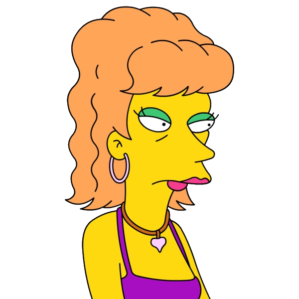

INSPECTOR DE SEGURIDAD
HOMER SIMPSON
"¡D'oh!"
Padre de la familia Simpson. Amante de las rosquillas, la cerveza Duff y ver televisión en el sofá.
 LOG IN
LOG IN

"¡D'oh!"
Padre de la familia Simpson. Amante de las rosquillas, la cerveza Duff y ver televisión en el sofá.